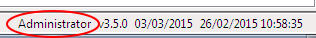
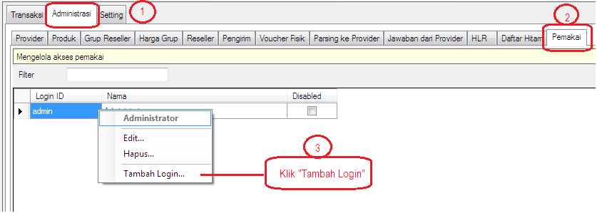
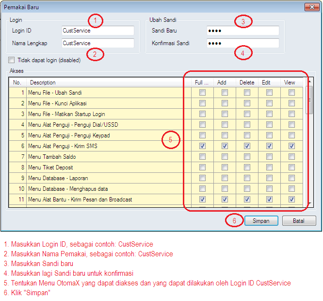

Membuat Login ID
Dengan adanya fitur Login Akses di versi 3.5.0, Anda dapat membuat Login ID selain admin (Default) beserta hak aksesnya. Namun perlu Anda ketahui ini hanya dapat dilakukan apabila OtomaX Anda minimal edisi Standard atau lebih tinggi klik disini, sehingga bila menghendaki membuat Login ID baru, silahkan upgrade dahulu klik disini; dan bila belum memiliki OtomaX beli dahulu klik disini.
Dalam server pulsa sekurang - kurangnya (selain Login ID admin (Default)) diperlukan 3 jenis Login ID, yakni:
- Customer Service, menangani keluhan pelanggan.
- Operator, memonitoring transaksi.
- Billing, menangani deposit pelanggan dan order stok.
Nah...kemudian bagaimana membuat Login ID? berikut ulasannya:
-
Pastikan Anda masuk ke OtomaX menggunakan Login ID admin (administrator). Perhatikan tampilan OtomaX pojok kanan bawah (lihat gambar)

-
Masuk Menu Administrasi -> Pemakai -> Pilih admin -> Klik Kanan -> Klik Tambah Login...

-
Kemudian tampil jendela berikut

- Sampai disini pembuatan Login ID sudah selesai, Untuk mencoba Login ID CustService Klik Menu File -> Kunci Aplikasi -> Masukkan Login ID CustService dan Password yang baru kita buat -> Klik Login
Perlu diketahui pengaturan hak akses dalam fitur Login Akses ada 5 macam:
-
Full Control
Apabila dicentang, Login ID dapat melakukan Add (menambah), Delete (menghapus), Edit (mengubah) dan View (melihat) Menu OtomaX yang sebaris dengan CheckBox Full Control -
Add
Apabila dicentang, Login ID dapat melakukan Add (menambah) pada Menu OtomaX yang sebaris dengan CheckBox Add -
Delete
Apabila dicentang, Login ID dapat melakukan Delete (menghapus) pada Menu OtomaX yang sebaris dengan CheckBox Delete -
Edit
Apabila dicentang, Login ID dapat melakukan Edit (mengubah) pada Menu OtomaX yang sebaris dengan CheckBox Edit -
View
Apabila dicentang, Login ID dapat melakukan View (melihat) pada Menu OtomaX yang sebaris dengan CheckBox View
Selanjutnya Anda dapat membuat lagi Login ID Operator dan Billing sebagaimana tata cara di atas.